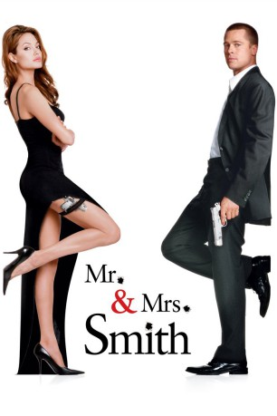
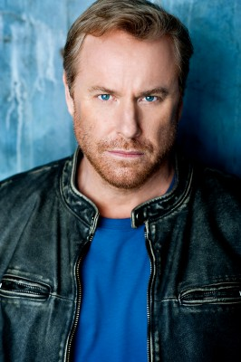

#1308 Mr. & Mrs. Smith
 
 IMDB-Wertung: 6.5 / 10
IMDB-Wertung: 6.5 / 10  Metascore: 55
Metascore: 55 
Was tun, wenn der Hafen der Ehe eine Sackgasse geworden ist? Viele Paar-Therapeuten raten dann dazu, ein gemeinsames Hobby zu finden, das das Ehepaar enger zusammenschweißt. Andere empfehlen, unterschiedlichen Interessen nachzugehen, um sich wieder interessanter, weil geheimnisvoller zu machen. Mr. und Mrs. Smith suchen und finden schließlich ihr Heil in der richtigen Mischung, die unter gegebenen Umständen zur Zündung kommt. Dies geschieht, als Mr. und Mrs. Smith ihr Doppelleben als Profikiller aufdecken müssen, in der bitteren Erkenntnis, dass sie aufeinander angesetzt worden sind. Aber wie sagt man so schön: Extreme Situationen haben bindenden Charakter. Und extrem kann man die Situation wahrhaftig beschreiben, als eine wahre Schwadron an Killern anrückt, um das zu vollenden, wozu Mr. und Mrs. Smith nicht imstande waren.
Jahr: 2005
Dauer: 120 Minuten
FSK: 12
Land: USA Studio: 20th Century FoxTonspuren: DTS - ,
Untertitel: Deutsch,
Auflösung: 1080p (1920x816) Größe: 6615 MB
Genre: Action, Komödie, Krimi, Thriller
Regisseur:  Doug Liman
Doug Liman
Drehbuch: Simon Kinberg
Soundtrack: John Powell
Darsteller:
 Brad Pitt als John Smith
Brad Pitt als John Smith Angelina Jolie als Jane Smith
Angelina Jolie als Jane Smith Vince Vaughn als Eddie
Vince Vaughn als Eddie Adam Brody als Benjamin Danz
Adam Brody als Benjamin Danz Kerry Washington als Jasmine
Kerry Washington als Jasmine Keith David als Father
Keith David als Father- Chris Weitz als Martin Coleman
- Rachael Huntley als Suzy Coleman
 Michelle Monaghan als Gwen
Michelle Monaghan als Gwen- Stephanie March als Julie - Associate #1
 Jennifer Morrison als Jade - Associate #2
Jennifer Morrison als Jade - Associate #2- Theresa Barrera als Janet - Associate #3
- Perrey Reeves als Jessie - Associate #4
- Melanie Tolbert als Jamie - Associate #5
- Elijah Alexander als Marco Racin
 Ron Bottitta als P.J. - Dive Bar Patron #2
Ron Bottitta als P.J. - Dive Bar Patron #2- Miguel Angel Caballero als Bellboy - Bogotá
- Victor A. Chapa als Americana Hotel Manager
 Maree Cheatham als Father's Secretary
Maree Cheatham als Father's Secretary- Noah Dahl als Coleman Kid #1
- Chris Daniels als Mailman Assassin
 Patrika Darbo als 50's Woman
Patrika Darbo als 50's Woman- Jennifer DeMille als Breakfast Diner Waitress
- Tyce Diorio als Salsa Dancer #2
 Jonny Rees als Mickey - Dive Bar Patron #1
Jonny Rees als Mickey - Dive Bar Patron #1- Megan Gallagher als 40's Woman
- Amy Hathaway als Beauty
 Kathrine Herzer als Hopscotch Girl #1
Kathrine Herzer als Hopscotch Girl #1 Ravil Isyanov als Curtis - Dive Bar Patron #4
Ravil Isyanov als Curtis - Dive Bar Patron #4- Stephanie Ittleson als Party Guest
 Mark Ivanir als Patron - Dive Bar
Mark Ivanir als Patron - Dive Bar- Benton Jennings als Maitre'D
- Simon Kinberg als Investment Banker #1
 Peter Lavin als Leroy - Dive Bar Patron #3
Peter Lavin als Leroy - Dive Bar Patron #3- Deren Tadlock als Doorman
 Sean Mahon als Lucky - Dive Bar Patron #5
Sean Mahon als Lucky - Dive Bar Patron #5 Kevin Makely als Johnson
Kevin Makely als Johnson- Joel Munoz als Policia #1
- Mark Newsom als Guard #1
- Edward Padilla als Colombian Military Officer
- Leonard Robinson als Watchguard
- Sam Sabbah als Bodyguard #1
-  Jimmy Shubert als Ancient Barker
- Abigail Rose Solomon als Mom #3
- Ali Marsh als Mom #1
- Michael-John Wolfe als Bartender - Coleman House
- Jeff Yagher als 40's Man
 Bryan Anthony als Dancer
Bryan Anthony als Dancer- Melissa Hurley als Dancer
- Carol Mack als Dancer
Datei: X:\2005(G-M)\Mr. & Mrs. Smith (2005, FSK12, 1920x816).mkv seit 18.06.2015
Festplatte: HD 2005(G-Z)-2006(A-Z)
 Es gibt insgesamt 46 Filme in der Gruppe '2005(G-M)'
Es gibt insgesamt 46 Filme in der Gruppe '2005(G-M)'